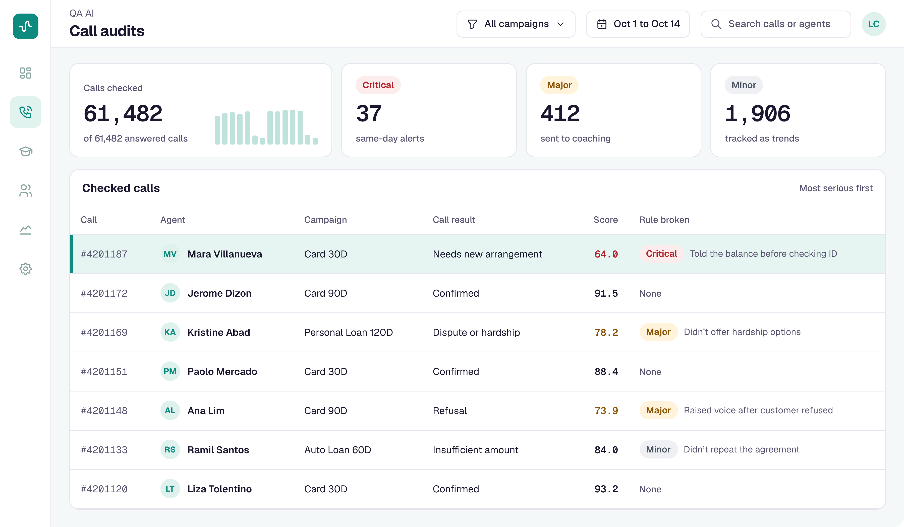
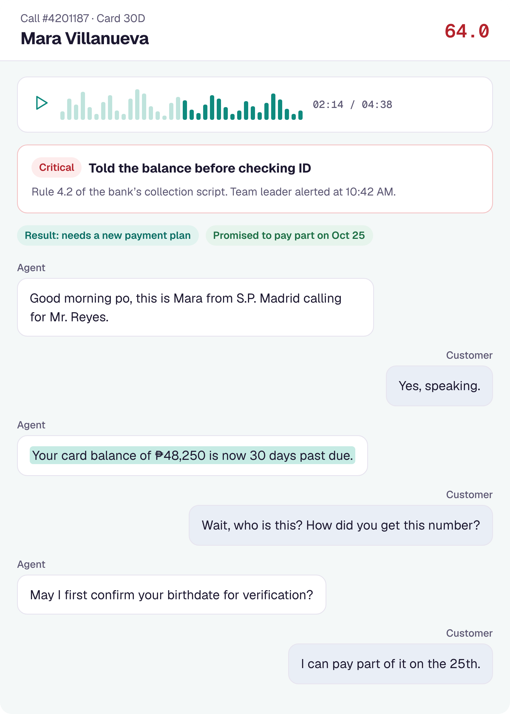

Every collection call audited against each bank's rules. No sampling.

Shows the exact sentence that broke the rule.
Agent, 02:14: "[transcript line] [flagged words] [transcript line]"

Book a call with the S.P. Madrid team.